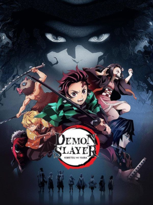

→A história acompanha Tanjiro Kamado, um garoto que vive com sua família nas montanhas. Um dia, ao voltar para casa, ele descobre
que sua família foi atacada por demônios. A única sobrevivente é sua irmã Nezuko Kamado, que acabou se transformando em um demônio.
Mesmo assim, Nezuko ainda demonstra sentimentos humanos. Tanjiro decide então se tornar um caçador de demônios para encontrar uma forma de curá-la.
Henrique Castro Lopes © ® 😁
